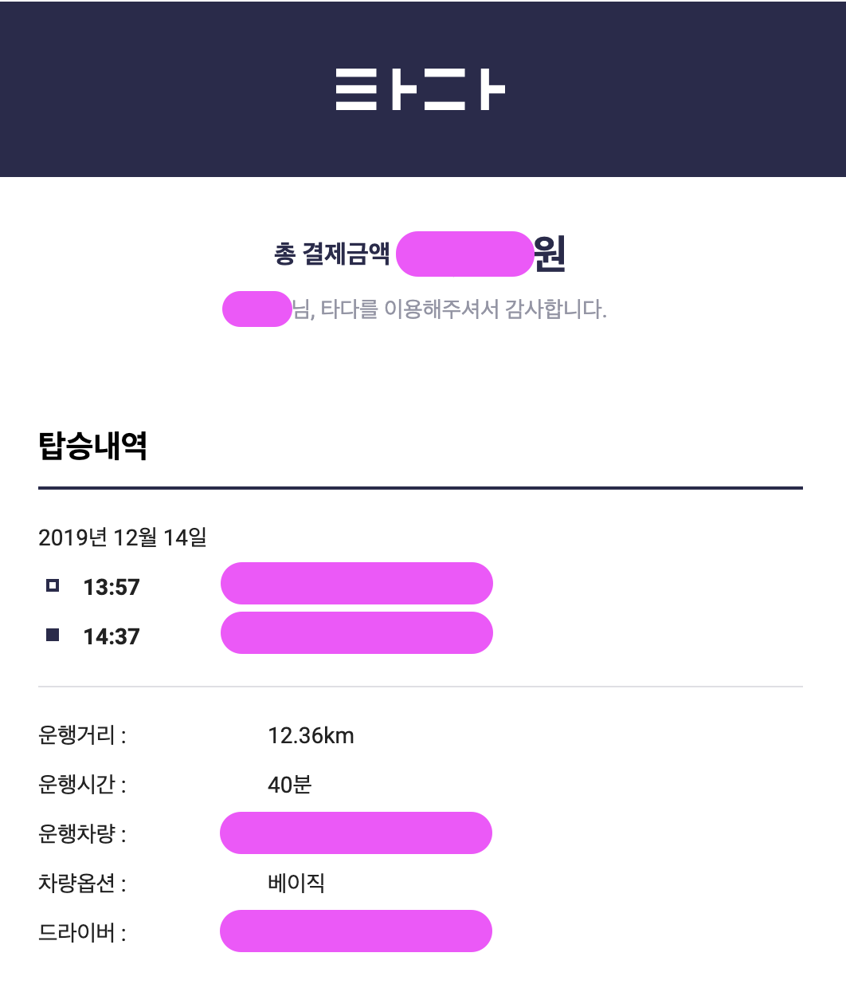
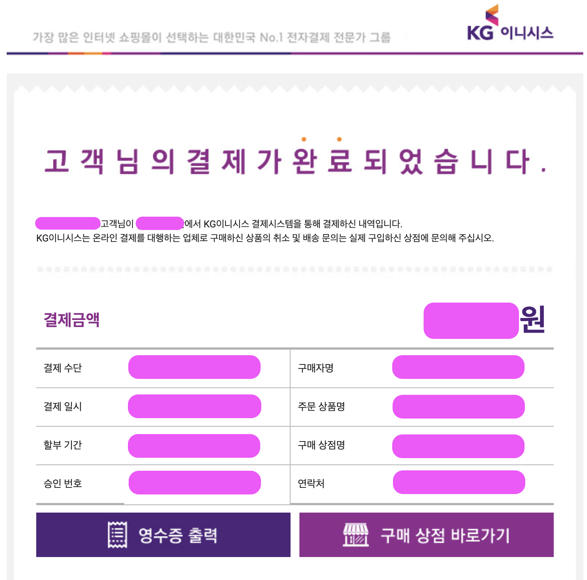
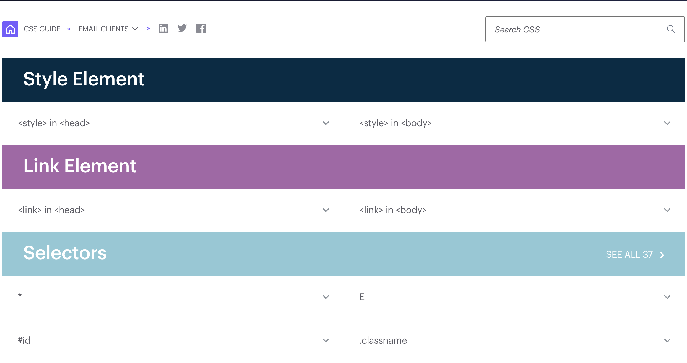

웹 개발자의 지옥, 이메일 폼 개발하기

웹을 개발하다보면 사용자를 위해, 법률적인 요소로 인해, 효율성을 위해, 등 다양한 이유 때문에 이메일을 전송하게 됩니다. 하지만 이 이메일을 HTML/CSS로 구현할 때 굉장히 고통스럽다는 사실은 상대적으로 알려져 있지 않습니다.
저도 이메일 관련 작업을 하면서 고통을 항상 겪는데요, 그렇기에 다른 분들도 겪을 수 있다고 생각해 쉽게 개발할 수 있는 가이드를 작성하고자 합니다. 이 글이 개발자들에게 조금이나마 도움이 되었으면 좋겠습니다.
순서
- 이메일 작업을 해야하는 이유
- 이메일 작업이 어려운 이유
- 이메일 작업 문제 재정의
- 이메일 작업하기
- 작업한 이메일 페이지 검증하기
1. 이메일 작업을 해야하는 이유
간단하게 언급했지만, 이메일 작업을 하는 가장 큰 이유는 법률적인 이슈때문이라고 볼 수 있습니다. ‘전자상거래 등에서의 소비자보호 지침’ 법률의 제 2조를 살펴보면 아래와 같은 내용이 있습니다.
"통신판매"란 우편ㆍ전기통신, 그 밖에 총리령으로 정하는 방법으로 재화 또는 용역(일정한 시설을 이용하거나 용역을 제공받을 수 있는 권리를 포함한다. 이하 같다)의 판매에 관한 정보를 제공하고 소비자의 청약을 받아 재화 또는 용역(이하 "재화등"이라 한다)을 판매하는 것을 말한다. 다만, 「방문판매 등에 관한 법률」 제2조제3호에 따른 전화권유판매는 통신판매의 범위에서 제외한다.통신판매를 하는 업종의 경우, 재화 또는 용역의 판매에 대한 정보를 제공해야 합니다. 제공하는 여러가지 방법이 있지만 아무래도 가장 쉬운 방법은 이메일로 전달하는 방법일 것입니다. 많은 기업들이 이메일로 결제 내역을 전달하고 있으며, 이렇게 전달된 이메일들을 퍼블리셔나 웹 프론트엔드 개발자, 더 나아가서 백엔드 프로그래머들이 작업하고 있습니다.
이메일 고지의 여러 폼들

타다의 이메일 고지

KG이니시스 이메일 고지
위와 같이 수많은 회사들이 고유한 이메일 고지 포맷을 가지고 있습니다. 공통점으로 얼마를 결제했는지, 주문 내역, 구매자명, 결제수단, 연락처 등을 포함하고 있습니다. 그래서 해당 부분을 포함하여 이메일 고지 포맷을 만들어야 하며, 만들어진 해당 포맷에는 여러가지 고지사항이 함께 포함되어 있어야 합니다.
2. 이메일 작업이 어려운 이유
그렇다면 이렇게 중요한 이메일 고지가 어려울까요? 웹 프론트엔드 개발자나 퍼블리셔 입장에서는 HTML/CSS를 적절히 활용해서 레이아웃을 작성하면 되는데 왜 그렇게 복잡할까? 하는 생각을 가질수도 있겠습니다. 모든게 쉽게 되면 정말 좋겠으나, 이메일은 과거부터 전통적인 영역이기 때문에 예외상황이 굉장히 많습니다. 그래서 이번 챕터에서는 여러가지 문제점을 보도록 하겠습니다.
첫 번째 문제 :: 수많은 메일 플랫폼
국내에서 사용하는 메일 회사들을 나열해보도록 합시다.
- 네이버 (naver.com)
- 구글 (gmail.com)
- 다음 (daum.net)
- 카카오 메일 (kakao.com)
- 네이트 (nate.com)
- 야후 (yahoo.com)
이 외에도 2000년대 초반 포털 사이트 개발이 부흥하면서 수많은 포털들이 만들어졌죠. nexonclub, cyworld등 다양한 메일 플랫폼이 존재했었습니다. 이 이야기는 무엇이냐하면, 바로 이렇게 다양한 메일 플랫폼을 지원할 수 있도록 개발을 해야한다는 뜻입니다. 하지만 이게 끝이 아닙니다. 나열한 메일 플랫폼에서 조금 더 깊게 들어가봅시다.
두 번째 문제 :: 수많은 메일 뷰어
네이버는 모바일 앱을 제공합니다. 그리고 모바일 앱에서 메일을 확인할 수 있죠. 안드로이드 디바이스를 사용하는 유저는 gmail을 통해 네이버 메일을 구독할 수 있으며, iOS 사용자 또한 gmail 앱을 통해 네이버 메일을 구독할 수 있습니다. 그게 아니라면 내장된 mail 앱을 통해 구독하는게 가능하죠. 하지만 굳이 앱을 통해 확인하고 싶지 않다면 모바일 웹으로 들어가서 확인할 수 있습니다. 사용자의 입장에서는 굉장히 다양한 엔드포인트가 존재하기 때문에 다양한 메일 플랫폼 대응뿐만 아니라, 수많은 메일 뷰어들을 대응해야 합니다. 여러가지 메일 뷰어를 나열해보도록 합시다.
모바일 앱
- 지메일 (Gmail)
- 네이버 앱 (Naver)
- 다음 앱 (Daum)
- 아이폰 메일 (iMail)
- 삼성 내장 메일 (samsung mail)
- LG 내장 메일 (LG mail)
- 그 외 어플리케이션 메일 프로그램
모바일 앱만 해도 굉장히 많은 종류가 존재합니다. 하지만 모바일 앱만 지원해서는 안됩니다. 모바일 웹도 지원을 해주어야 합니다.
모바일 웹
- Chrome
- Safari
- 돌핀 브라우저
- 삼성 내장 브라우저
- LG 내장 브라우저
- Opera Mini
- 네이버 웨일 브라우저
- Firefox
모바일 웹 어플리케이션은 이보다 훨씬 많습니다. 모바일은 이쯤해서 정리하고, PC를 보도록 합시다.
PC 브라우저
- Chrome
- Safari
- IE (8,9,10,11 등..)
- IE Edge
- Opera
- 네이버 웨일 브라우저
- Firefox
종류 수가 어마어마 하네요. 이러한 친구들을 공통으로 대응을 해주어야 합니다. 물론 이 이야기는 국내 한정입니다. 그 이유는 각 나라마다 고유의 포털이 존재하며, 해당 포털에 맞게 나열을 하고 어떤 버전까지 지원을 해야하는지 명확히 정해야하기 때문입니다.
3. 이메일 작업 문제 재정의
위에서 살펴봤듯, 이메일 폼을 개발하면서 다뤄야 할 문제가 너무나 광범위 합니다.
문제를 다시 한번 재정의 해봅시다. 가장 편한 방법은, 이메일 고지를 제작함에 있어서 모든 플랫폼을 안고 간다는 가정하에 작성을 하고 가장 까다로운 브라우저를 택해서 개발을 하는 방법입니다. 이 방법의 장점은, 전체가 동일하게 나오지는 않겠지만 어느정도 호환을 유지시킬 수 있다는 점입니다.
그렇다면 재정의한 문제를 토대로 제약 사항을 도출해내 봅시다.
첫 번째 제약 사항 :: inline style로 작성하라.
첫 번째부터 굉장히 큰 벽이 느껴집니다. 여기서 inline style이라는 것은 아래와 같이 style 태그로 감싼 코드가 아닙니다.
<head>
<style>
.table-wrapper {
background-color: #fff;
...
}
</style>
</head>
<body>
<div class="table-wrapper">
</div>
</body>이렇게 할 수 있다면 희망이 보이겠지만 아쉽게도 아닙니다. 그래서 아래와 같이 작업을 해야합니다.
<body>
<div style="backgroundColor: #fff">
</div>
</body>위와 같이 inline style로 작성해야합니다. 왜 이런 inline style로 작업을 해야할까요? 그 이유는 모든 메일이 <style> 태그를 지원하지 않기 때문입니다. Gmail과 iOS Mail App은 <style> 태그를 지원하지만 한국 메일 트래픽의 대다수를 갖고있는 네이버, 다음, 네이트와 같은 메일 플랫폼은 <style>을 지원하지 않습니다. 그래서 본인이 이메일 고지 해야하는 대상이 국내 한정이라면, 이 부분에 대해서는 ìnline style`을 꼭 가져가야 합니다.
두 번째 제약 사항 :: 반응형으로 코딩 하지마라.
모바일 시장이 점차 커지면서 웹 개발을 할 때 반응형으로 개발하는 경우가 많습니다. 하지만 이 방법은 이메일을 개발할 때 적합하지 않습니다. 그 이유는 이메일에 나오는 레이아웃은 PC와 모바일 각각 최적화하여 보여주는게 아닌 모바일에서도 PC와 같은 데이터가 동일하게 나와야 합니다. 일반적으로 이메일 고지는 구매 내역과 관련된 내용이 많습니다. 그래서 많은 텍스트를 보여주어야 하며, PC에서 볼 수 있는 막대한 양의 텍스트를 수용할 수 있어야 합니다.
세 번째 제약 사항 :: 여러 브라우저 지원을 생각하고 코딩하여라.
위에서 여러 플랫폼에 대해서 적용해야한다고 말씀드렸지만 다시 한번 강조를 하자면 이메일 고지의 폼 자체도 메일사에서 지원하는 규격이 있겠으나 그와 더불어 브라우저 위에서 돌아간다는 사실에 대해 인지를 해야합니다. 그래서 브라우저에 대해 inline style로 대응을 해야하기도 해요. 그렇기 때문에 최대한 낮은 CSS 버전에 해당하는 Property와 옵션을 사용해야합니다.
네 번째 제약 사항 :: Table 태그로 코딩하라.
과거에 많이 사용되었던 <table> 태그를 사용한 코딩 방법을 사용해야 합니다. 왜냐하면 여러 이메일 솔루션은 <div>를 제대로 지원하지 않기 떄문입니다.
다섯 번째 제약 사항 :: 메일 전달 솔루션의 문법을 사용해야 한다.
앞서 말한 제약 사항은 본인이 조심해서 코딩을 할 수 있는 부분이었으나 이번 제약사항은 자신이 할 수 있는 영역이 아닌 외부 툴을 사용하면서 겪는 이슈를 이야기 해보고자 합니다.
일반적으로 이메일을 전달하는 필요성이 있을 때 회사 자체가 이메일 솔루션을 개발하지 않는 이상 외부 솔루션을 사용할 것 입니다. 사용을 하게되면 솔루션 별로 html내에 데이터를 삽입할 수 있는 독자적인 문법이 존재하거나, 여태까지 많이 쓰여왔던 템플릿 엔진을 사용합니다.
여러가지 템플릿 엔진 중에서 많이 쓰이는 템플릿 중 하나는 Free Marker가 있을 겁니다. 아무래도 Java 개발자가 많다보니 익숙한 템플릿을 선호하게 되는데 지금에서야 Free Marker는 많이 사용되지 않으나 과거에 만들어졌던 다양한 이메일 솔루션은 Free Marker로 많이 사용되었습니다.
<html>
<head>
<title>${title}
</head>
<body>
<h1>${title}</h1>
<p>${exampleObject.name} by ${exampleObject.developer}</p>
<ul>
<#list systems as system>
<li>${system_index + 1}. ${system.name} from ${system.developer}</li>
</#list>
</ul>
</body>
</html>여러가지 제약 사항에 대해서 이야기를 해봤으니 이번에는 이메일 관련해서 쉽게 코딩을 할 수 있는 방법을 찾아봅시다.
4. 이메일 작업하기
앞서 여러가지 제약사항에 대해서 찾아봤습니다. 그렇다면 정녕 이메일 작업을 쉽게 할 수 있는 방법은 없는걸까요? 앞으로 살펴보도록 합시다.
첫 번째 :: Campaignmonitor 참고

이메일 클라이언트에서 해당 property를 어떤 메일이 지원하는지 볼 수 있는 사이트.
써야하는 CSS Property를 적용하기에 앞서 해당 Property를 사용할 수 있는지 확인합시다.
두 번째 :: 본격적인 작성 시작
이제 레이아웃을 본격적으로 코딩해보도록 합시다.
DOCTYPE
DOCTYPE은 브라우저에게 문서의 형식을 어떤 형식으로 사용할 것인지 이야기를 하는데 쓰입니다. 메일에 사용되는 DOCTYPE은 XHTML 1.0 Transitional DTD 입니다.
XHTML 1.0 Transitional DTD란?
- XHTML: XML 문법을 사용.
- Transitional: font와 같은 사용이 금지된 요소 등을 사용할 수 있으나, frameset 을 사용할 수 없음.
- DTD: Doctype의 약자.
즉, frameset을 사용하지 못하고 XML 문법을 사용하는 규제가 강한 문법의 형태라고 볼 수 있습니다. 이 형태를 사용하게 되면 이메일 클라이언트에서는 신뢰할 수 있는 형식으로 인지하여 유효성 검사 및 렌더링에 도움을 줍니다.
<!DOCTYPE html PUBLIC "-//W3C//DTD XHTML 1.0 Transitional//EN" "http://www.w3.org/TR/xhtml1/DTD/xhtml1-transitional.dtd">
<html xmlns="http://www.w3.org/1999/xhtml">
...
</html>HEAD
문서 초기 설정이 변경되었으므로(HTML -> XHTML) meta 태그로 설정을 해줍시다. 해당 meta 태그로 설정을 해주게 되면 캐릭터셋과 문서의 포맷을 설정할 수 있습니다.
<!DOCTYPE html PUBLIC "-//W3C//DTD XHTML 1.0 Transitional//EN" "http://www.w3.org/TR/xhtml1/DTD/xhtml1-transitional.dtd">
<html xmlns="http://www.w3.org/1999/xhtml">
<head>
<title>이메일 고지</title>
<meta http-equiv="Content-Type" content="text/html; charset=UTF-8"/>
<meta name="viewport" content="width=device-width, initial-scale=1.0"/>
</head>
<body>
...
</body>
</html>viewport 설정에서 사이즈를 고정하고 싶다면 아래와 같이 해보세요!
이렇게 사용하게 되면 width를 660px로 고정시켜버리고, cover fit으로 설정하게 됩니다. (가득차게 됨) 하지만 이렇게 되면 gmail에서 제대로 반응하지 않으므로 조심하세요! P.S 일반적으로 600이상 800미만을 지키는게 좋습니다.
BODY
위에서 언급되었던 네이버, 다음과 같은 국내의 이메일 플랫폼은 <body> 태그를 삭제해버립니다. 그래서 body 대신으로 사용될 수 있는 태그가 필요한데, 이 태그는 위에 언급했던 것 처럼 <div> 태그 대신 <table> 태그를 사용하여 감싸줍시다.
<!DOCTYPE html PUBLIC "-//W3C//DTD XHTML 1.0 Transitional//EN" "http://www.w3.org/TR/xhtml1/DTD/xhtml1-transitional.dtd">
<html xmlns="http://www.w3.org/1999/xhtml">
<head>
<title>이메일 고지</title>
<meta http-equiv="Content-Type" content="text/html; charset=UTF-8"/>
<meta name="viewport" content="width=device-width, initial-scale=1.0"/>
</head>
<body>
<table border="0" cellpadding="0" cellspacing="0" width="100%" id="container">
<tr>
<td>
<table border="0" cellpadding="0" cellspacing="0" width="800">
<tr>
<td>
안녕하세요.
</td>
</tr>
</table>
</td>
</tr>
</table>
</body>
</html>
<table border="0" cellpadding="0" cellspacing="0" width="800"></table>
-
기본적으로 위 옵션 형태로 코딩하는 걸 권장 드립니다. 기본 값을 초기화하지 않아 생기는 문제에 대해서 해결할 수 있습니다.
-
border: 보더
cellpadding: cell내의 패딩값
cellspacing: cell의 간격
width: 너비
이렇게 코딩을 하게 되면 굉장히 가독성이 안좋아지므로 칸을 한 칸씩 띄워주시는 것과 div마다 고유한 id를 넣어주셔서 depth 표기를 명확히 해주는 걸 추천드립니다.
스타일
html에 Table 코딩을 진행하셨다면 이제 스타일을 넣을 차례입니다. 하지만 inline으로 전부 style property를 열어 추가해주는 행위는 굉장히 힘든 일입니다. 그래서 CSS Inliner를 사용해봅시다.
- CSS Inliner - Web Viewer :: 프리뷰 기능도 존재, 편함
- NPM - Inline Email :: 노드 환경에서 사용할 수 있는 모듈, CSS를 inline화 시켜줌.
이 두 가지 방법을 사용하면 <style> 태그를 사용하더라도 inline화 시킬 수 있기 때문에 조금 더 편리하게 작성할 수 있습니다.
body {
width: 100% !important;
height: 100%;
padding: 0;
margin: 0;
}
#container {
padding: 30px 0 30px 0;
background-color: #e6e6e6;
box-sizing: border-box;
}
img, a, button {
border: 0;
outline: none;
text-decoration: none;
}
h1, h2, h3, h4, p, span, strong, strike {
padding: 0;
margin: 0;
font-size: 14px;
font-weight: 400;
}
table, td {
border-collapse: collapse;
}공통된 부분을 첫 번째로 작성해줍니다. 개발이 완료될 쯔음 class를 차례대로 선언해주고 확장시켜줍니다.
.img-wrapper {
width: 100%;
height: auto;
margin: 30px;
...
}
...또한 최종 마무리 시 각 플랫폼 별 예외처리 코드를 작성해주도록 합시다.
table, td {
/* mso는 microsoft outlook의 약자입니다. */
/* outlook 2007 이상에서 강제로 추가하는 테이블 주위의 간격을 제거 해줍니다. */
mso-table-lspace: 0pt;
mso-table-rspace: 0pt;
}
img {
/* IE에서 크기가 조정된 이미지를 렌더링 하는 방식을 수정합니다. */
-ms-interpolation-mode: bicubic;
}
body, table, td, p, a, li, blockquote {
/* IE와 Safari에서 텍스트 크기 및 내부 데이터 크기를 자동으로 줄여서 텍스트가 빠져나가지 않도록 크기를 잡아주는 설정입니다. */
-ms-text-size-adjust: 100%;
-webkit-text-size-adjust: auto;
}테이블
전반적으로 사용되는 <table> 옵션은 현재 웹에 사용되는 <div> 태그를 대체하여 사용됩니다. 하지만 <table> 태그에는 필수적으로 사용되는 요소 몇 가지가 존재합니다. 이는 위의 예제에서 볼 수는 없었는데요, 바로 <tbody>와 <thead> 입니다. 이 두 친구들은 사용이 되지 않습니다. 그 이유는 지원되지 않는 플랫폼이 있기 때문입니다. 그래서 이메일 고지를 작성할 때는 <table>, <tr>, <td> 태그 세 가지만 사용하여 작성하는 걸 추천드립니다.
colspan, rowspan 사용하기
여러 이메일 플랫폼은 colspan과 rowspan 두 속성을 지원하지 않습니다. 그렇기 때문에 colspan, rowspan 옵션은 가급적이면 때는 걸 추천드립니다. 꼭 해당 레이아웃을 개발해야 한다면 Table을 이어 붙여서 개발하는 걸 추천드립니다.
Before
<table border="0" cellpadding="0" cellspacing="0" width="100%">
<tr>
<td></td>
<td></td>
<td></td>
</tr>
<tr>
<td></td>
<td colspan="2"></td>
</tr>
</table>After
<table border="0" cellpadding="0" cellspacing="0" width="100%">
<tr>
<td>
<table border="0" cellpadding="0" cellspacing="0" width="100%">
<tr>
<td></td>
<td></td>
<td></td>
</tr>
</table>
</td>
</tr>
<tr>
<td>
<table border="0" cellpadding="0" cellspacing="0" width="100%">
<tr>
<td></td>
<td></td>
</tr>
</table>
</td>
</tr>
</table>이미지
이메일 폼을 만들면서 들어가는 이미지는 일반적으로 로컬에 넣어서 함께 사용합니다. 하지만 이 방법은 여러 이메일 플랫폼에 따라 환경이 바뀌게 됩니다. 어떤 이메일 플랫폼은 정적 리소스를 지원하지만, 어떤 이메일 플랫폼은 지원을 안할 수도 있습니다. 그렇기 때문에 가장 안전한 방법으로 외부 저장소에 이미지를 업로드 하고, 아웃바운드를 열어 접근가능하게 만드는게 제일 현명한 방법입니다. (S3 같은게 있겠군요.)
- 외부 이미지 호스팅으로 이미지 링크를 가져온다.
- 용량은 250kb 미만으로 유지한다.
- alt를 꼭 입력한다.
이미지 태그는 인라인 스타일로 width와 height를 주기보다, Property로 줄 수 있는 width, height로 주는게 좋습니다.
<img src="https://example.com/image1.png" width="400" height="400" alt="image1">텍스트
자주 사용하던 p, h1, h2, h3와 같은 텍스트는 사용하지 않습니다. 그 이유는 이메일 플랫폼들은 과거 방식의 table 코드 작성을 택하고 있으며 그 때의 최적화된 텍스트 작성법은 <td> 태그 안에 텍스트를 삽입하는 방법이었기 때문입니다. 시맨틱 웹이라고 하는 알아보기 쉽도록 상황에 맞게 태그를 적절히 쓰는 방법은 과거에는 많이 사용하지 않았기 때문에 해당 규칙을 신경쓰면서 작성하지 않으셔야 합니다.
<!-- 텍스트를 그냥쓰거나 -->
<table>
<tr>
<td>
안녕하세요.
</td>
</tr>
</table>
<!-- HTML 옵션을 더 쓰도록 하자 -->
<table>
<tr>
<td>
<font color="#e6e6e6">안녕하세요.</font>
</td>
</tr>
</table>그 외
컬러
- 색상을
rgb나rgba형식으로 작성하면 호환되지 않는 이메일 플랫폼이 있습니다. 그래서#를 사용하는 Hexadecimal Colors를 이용하여아 합니다. - Background 옵션이 적용되지 않는 이메일 플랫폼이 존재합니다. 그러므로 bgcolor 옵션으로 조정해주도록 합시다.
<!-- 올바르지 않은 기입 -->
<td style="backgroundColor: #fff"></td>
<!-- 올바른 기입 -->
<td bgcolor="#ffffff"></td>단일 클래스
- 무조껀 클래스는 여러개 사용하면 안됩니다. 위에서 언급했듯 단 하나의 id를 가지고 코딩하는 걸 추천드리며, 동일한 옵션을 가진 태그일 때 단일 클래스로 이용하는 걸 추천드립니다.
<!-- 올바르지 않은 기입 -->
<td class="example1 example2"></td>
<!-- 올바른 기입 -->
<td class="example"></td>CSS 단축 속성
- CSS는 여러 옵션을 단축해서 사용할 수 있게 지원합니다. 이러한 Property로는
background가 존재합니다. 위에서 언급했듯, 지원하지 않는 이메일 플랫폼이 있기 때문에 이 Property는 사용하면 안됩니다.
/* 올바르지 않은 기입 */
body {
background: lightblue url("img_tree.gif") no-repeat fixed center;
}
/* 올바른 기입 */
body {
background-color: lightblue;
background-image: url("img_tree.gif");
background-repeat: no-repeat;
background-size: fixed;
background-position: center;
}Margin
- 여러 이메일 플랫폼은 Margin Property를 제공하지 않습니다. 그래서 padding으로 거리를 두어야 합니다.
- padding을 쓸 때 유의해야 하는 부분은
padding: 0 0 0 10px처럼 모든 인자를 넣어주어야 한다는 점 입니다.
/* 올바르지 않은 기입 */
.common {
padding: 12px 12px;
}
/* 올바른 기입 */
.common {
padding: 12px 12px 12px 12px;
}5. 작업한 이메일 페이지 검증하기
validator.w3.org에서 검증합니다. 해당 페이지의 링크를 사용하면 제대로 검증되는지 확인할 수 있습니다.